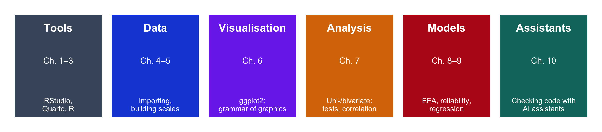
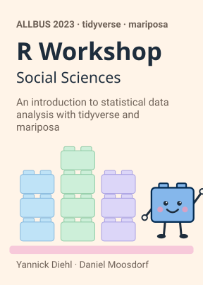

R Workshop – Social Sciences
An introduction to statistical data analysis with tidyverse and mariposa
An introduction to statistical data analysis with R, tidyverse and mariposa for the social sciences, using the 2023 German General Social Survey (ALLBUS).
0 Preface

“Everything that exists is an object. Everything that happens is a function call.” John Chambers
Are Islamophobic attitudes more widespread in eastern Germany than in the West? Who holds them, and how are they related to political orientations? To answer such questions with data, you need two things: a clean dataset such as the 2023 German General Social Survey (ALLBUS), and a tool that can analyse it. This book is an introduction to that tool: R for statistical data analysis in the social sciences. It is written for students who are new to R, often with some experience of SPSS, and who are looking for a simple, modern introduction.
You work your way from the first data import through descriptive and inferential statistics to factor analysis and regression. The toolkit is deliberately small: the tidyverse for data manipulation and visualisation, and mariposa, a package developed in Marburg, for statistical analysis. On top of that, you use Quarto to turn your code into a published report.
The methods are intended for social science studies that meet scientific survey standards. You can use the same techniques for data collected without such standards, and survey weighting is included from the start.
What you will be able to do after this book
- Import datasets from SPSS, Stata or Excel and handle labels and missing values.
- Transform and recode data and build scales from items.
- Carry out univariate, bivariate and multivariate analyses, with and without survey weights.
- Compute and interpret correlations, factor analyses, and linear and logistic regressions.
- Turn results into publication-ready graphics with ggplot2.
- Document an analysis so that it can be reproduced.
- Write and check R code with AI assistants without passing on research data.
Overview of the chapters
1
RStudio
- Install R and RStudio in the right order.
- Use the RStudio interface with confidence.
Quarto and reproducible research
- Explain the difference between an R script, R Markdown and Quarto.
- Create a
.qmddocument, render it and export it to HTML/PDF/Word.
The R programming language
- Create and name variables and assign values to them.
- Keep your code understandable for your future self with
#comments.
Data import and inspection
- Import an SPSS dataset with
read_spss(), including all variable and value labels. - Search for variables by name or label with
find_var().
Transforming data and building scales
- Create new variables with
mutate(). - Write conditional logic with
case_when(),recode_values()andif_else().
Visualisation basics
- Explain the grammar of graphics approach of ggplot2.
- Visualise frequencies, distributions and relationships with the appropriate
geom_*()layers.
Univariate and bivariate analysis
- Report the frequency distribution of a variable, weighted and unweighted.
- Determine the mean, median, spread, IQR, skewness, kurtosis and standard error.
Latent structures
- Set up and read an inter-item correlation matrix and visualise it as a heatmap with ggplot2.
- Understand the KMO measure and Bartlett's test as assumption checks and find them in the
efa()output.
Explanatory models
- Run a simple linear regression with one predictor, draw the regression line by hand from the model coefficients in a scatter plot (
geom_abline()) and follow the OLS logic (“least squares”). - Run, weight and interpret a multiple linear regression: coefficients, Beta, R², model F.
Working with AI assistants
- Explain why an AI assistant may invent functions and arguments for mariposa.
- Write a request that gives context: goal, package versions, documentation, variables and error message.
How to read this book
- Read the chapters in order. They build on each other. Chapter 3 assumes the basics from Chapters 1–2, all methods chapters from Chapter 7 onwards assume the data preparation from Chapters 4–5, and Chapters 7–9 use the visualisation basics from Chapter 6 throughout.
- Run the code as you read. Keep RStudio open alongside the book and copy the chunks into your Quarto document. Copying and pasting is explicitly encouraged.
- Take the exercises seriously. Each chapter ends with four exercises: two reproduction exercises, one transfer exercise and one mini research question without a model solution. If you apply the mini research questions in the methods chapters consistently to a question of your own, you build up a small research project alongside the main ALLBUS study. Try each exercise yourself first.
- Get the dataset early. You need ALLBUS 2023 from Chapter 4 onwards; how to get the data is explained under Example dataset.
A short roadmap through the six stages:
Why R?
- R is a programming language developed specifically for statistical computing and data visualisation.
- R is open source: there are no licence fees, and the add-on packages are free too.
- You can analyse and visualise data very flexibly. Small analyses and large pipelines follow the same coding style.
- Research organisations, companies and public authorities use R worldwide. R skills are in demand on the job market.
- R runs on all common platforms and can be integrated into any IT infrastructure.
Why tidyverse and mariposa?
Instead of a long list of specialised packages, we work with the tidyverse ecosystem and the mariposa package.
Tidyverse. A collection of packages designed to work together (dplyr, tidyr, ggplot2, readr, purrr, tibble, stringr, forcats, lubridate) that share a common style for data manipulation and visualisation. Once you have understood the tidyverse, you can read almost any modern R script.
mariposa. A package developed in Marburg (Marburg Initiative for Political and Social Analysis) that provides the methods typical of social science analyses in a consistent syntax close to the tidyverse: data import from SPSS, handling of labels and missing values, descriptive statistics, t-tests, ANOVA, correlation, factor analysis, regression. The output follows the table layouts of SPSS, so if you are switching from SPSS you will recognise it. The results are checked against reference output from SPSS Statistics 29. The mariposa vignette “SPSS Compatibility” shows which functions have been compared with SPSS and how thoroughly.
Requirements
R (programming language, open source). You can find the current version at cran.r-project.org. This book requires at least R 4.3; R 4.5 or later is recommended so that all functions shown here run without changes.
RStudio as the integrated development environment (IDE). The IDE itself is still called RStudio; the company behind it has been called Posit since 2022. You need the desktop version: posit.co/download/rstudio-desktop. If you prefer not to install anything locally, you can use Posit Cloud (formerly RStudio Cloud) in your browser instead.
Packages. At the start, we install the tidyverse ecosystem and the mariposa package once; we use them throughout the book. Both are available on CRAN, the official R package archive:
install.packages("tidyverse")
install.packages("mariposa")This book was rendered with mariposa 0.7.4. To see which version you have, run packageVersion("mariposa"). Older versions (before 0.7.4) give different output in some places or do not yet have some of the arguments.
Load both packages in every R session:
Later, patchwork is added for combining plots in Chapter 9, and lavaan and semPlot for confirmatory factor analysis in Chapter 8. Apart from these, the book deliberately uses no other packages.
Example dataset: ALLBUS 2023
Throughout the book we work with the ALLBUS, the German General Social Survey. The examples come from the 2023 wave with 5246 respondents and 579 variables.
How to get the data. You can find the English-language edition of the dataset, “German General Social Survey – ALLBUScompact 2023”, in the GESIS data catalogue under study number ZA8833. You need a free GESIS account; after registering, you can download the SPSS version. Save the file in your project folder as ALLBUS2023.sav.
As the common thread through the methods chapters, we use the question:
Who holds Islamophobic attitudes in Germany in 2023, and how are they related to political orientations and social structure?
The question runs through every chapter:
- Chapter 4: Data import and inspection. You import the ALLBUS, find variables with
find_var(), declare missing values and create your analysis subset. - Chapter 5: Transforming data and building scales. From six ALLBUS items you build an Islamophobia scale, and alongside it a populism scale, including careful reverse coding, a minimum number of valid answers and POMPS for comparability.
- Chapter 6: Visualisation basics. You get to know the grammar of graphics behind ggplot2. You use these tools in the following chapters to illustrate each method.
- Chapter 7: Univariate and bivariate analysis. You describe the distribution of the scale, compare East and West, and test the relationship with populism.
- Chapter 8: Latent structures. You check the factor structure and reliability of the scales with EFA, Cronbach’s α and a first look at CFA.
- Chapter 9: Explanatory models. You ask which characteristics (education, age, region, populism) best explain Islamophobia, using factorial ANOVA and multiple and logistic regression, and present the results as a publication-ready coefficient plot with
patchwork. - Chapter 10: Working with AI assistants. You let an assistant help you with further steps of your analysis and check its suggestions. The assistant does not get to see the ALLBUS data.
This way you see how the individual methods combine into a complete analysis.
How the chapters are structured
Every methods chapter follows the same structure: a question is answered in code, and the output is given an interpretation. Large parts of the chapters consist of R code in code chunks:
allbus |> describe(islamophobia, weights = wghtpew)The result appears directly below, rendered into the book. You can copy the code into your own Quarto document at any time; copying and pasting is explicitly encouraged.
Pipe operator. Throughout the book you will see the native pipe |>. It passes the result of one function on to the next and turns nested code into a readable sequence of steps:
In older code you will often find %>% (from the magrittr package). The two do almost the same thing; Chapter 3 briefly explains the difference.
Boxes. Four kinds of boxes appear throughout the book. Two of them are always open, because you need them at exactly that point:
Tip
SPSS → R. Direct translation help for people switching from SPSS: the SPSS command and its R equivalent.
The second open box warns about mistakes that are easy to make and that you often notice only late:
Warning
Caution. Common pitfalls and stumbling blocks.
The other two contain additional knowledge and are therefore collapsed. You do not need them for the next step in the chapter; clicking the line opens them:
NoteBackground: theory behind a method
Short notes that explain why a method works the way it does, where a scale comes from or what belongs in a methods report.
The notes on shortcuts that mariposa offers are collapsed too:
Importantmariposa tip: more compact solutions
Places where mariposa offers a particularly compact solution.
Further reading
If you want to go deeper:
- Hadley Wickham, Mine Çetinkaya-Rundel & Garrett Grolemund, R for Data Science (2nd edition), the standard work on the tidyverse, free online.
- Hadley Wickham, Advanced R, for anyone who wants to understand R as a programming language.
- mariposa documentation: yannickdiehl.github.io/mariposa, with function reference and vignettes.
- Posit, Quarto documentation, the reference for books, reports and coursework written with Quarto (see Chapter 2).
Keyboard shortcuts at a glance
These are the RStudio shortcuts you will need most often. The section Useful keyboard shortcuts in Chapter 1 explains when each shortcut is useful.
| Action | macOS | Windows |
|---|---|---|
| Run current line |
cmd + Enter
|
ctrl + Enter
|
| Run whole chunk |
cmd + shift + Enter
|
ctrl + shift + Enter
|
| Run all chunks |
cmd + option + R
|
ctrl + alt + R
|
| Insert new chunk |
cmd + option + I
|
ctrl + alt + I
|
| Render document |
cmd + shift + K
|
ctrl + shift + K
|
| Save |
cmd + S
|
ctrl + S
|
Assignment arrow <-
|
option + -
|
alt + -
|
Pipe |>
|
cmd + shift + M
|
ctrl + shift + M
|
| Comment or uncomment line |
cmd + shift + C
|
ctrl + shift + C
|
| Reformat code |
cmd + shift + A
|
ctrl + shift + A
|
| Clear console |
control + L
|
ctrl + L
|
| Previous commands in the console |
cmd + ↑
|
ctrl + ↑
|
| Help for the function under the cursor | F1 |
F1 |
| Show all keyboard shortcuts |
option + shift + K
|
alt + shift + K
|
The pipe shortcut inserts |> only if the option Use native pipe operator is ticked under Tools → Global Options → Code. Otherwise you get the older pipe %>%.